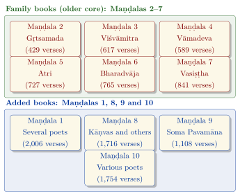
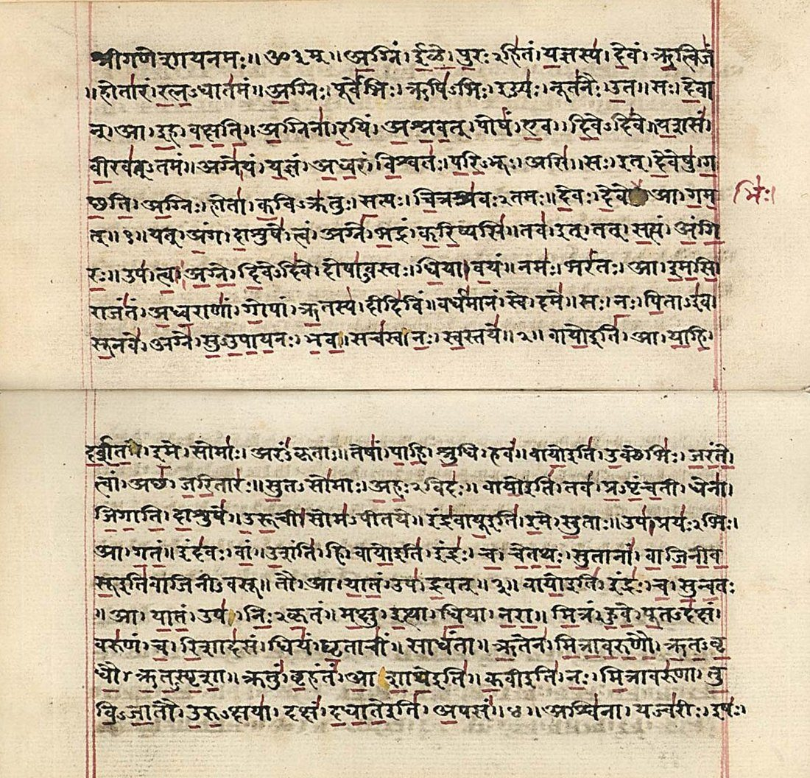

Chapter 2: The Ṛgveda: The Veda of Praise¶
Invocatory Verse
agnim īḷe purohitaṃ yajñasya devam ṛtvijam
hotāraṃ ratnadhātamam
I praise Agni, the household priest, the god of the sacrifice, the officiant,
the invoker, who best bestows treasure.
— Ṛgveda 1.1.1
2.1 Introduction to the Ṛgveda¶
The Ṛgveda (ṛc, “verse of praise” + veda, “knowledge”) is the oldest of the four Vedas and the oldest substantial text in any Indo-Aryan language. Composed in the north-west of the subcontinent over several centuries, probably c. 1500–1200 BCE for its core and somewhat later for its latest parts (see Section 1.7), it was preserved orally with extraordinary accuracy for some three thousand years (Jamison and Brereton 2014; Witzel 2003).
The Ṛgveda Saṃhitā consists of 10,552 verses (ṛc) in 1,028 hymns (sūkta), grouped into ten books (maṇḍala). The hymns are addressed mainly to the gods (devas)—powers of nature, of the ritual and of social order—and were recited by the hotṛ priest at the sacrifice. They are also highly crafted poetry, full of word-play, riddles and allusion, composed by hereditary families of poets who prized verbal skill and competed for the favour of gods and patrons.
Key Facts about the Ṛgveda
| Maṇḍalas (books): | 10 |
| Sūktas (hymns): | 1,028 (including the 11 Vālakhilya hymns) |
| Ṛcs (verses): | 10,552 |
| Words: | about 153,800 (traditional count) |
| Commonest metres: | Triṣṭubh, Gāyatrī, Jagatī |
| Most-invoked deities: | Indra, Agni, Soma |
| Surviving recension: | Śākala |
2.2 The Ten Maṇḍalas: Structure and Organisation¶
Scholars distinguish between the “family books” (Maṇḍalas 2–7), each the collection of a particular clan of poets, and the books added around them (Maṇḍalas 1, 8, 9 and 10), as Figure 2.1 shows.

2.2.1 The Family Books (Maṇḍalas 2–7)¶
The family books form the oldest nucleus of the Ṛgveda. Each is the collection of one poetic clan, and within each book the hymns are arranged on a consistent plan: first by deity (Agni first, then Indra, then other gods), and within each deity-group by decreasing number of verses per hymn. Hymns that break this pattern are often later additions—one of the clues used by scholars to identify the growth of the collection (Witzel 1997). Table 2.1 lists the six family books.
| Maṇḍala | Poet Family | Sūktas | Verses | Notable Feature |
|---|---|---|---|---|
| II | Gṛtsamada | 43 | 429 | Smallest family book |
| III | Viśvāmitra | 62 | 617 | Contains the Gāyatrī (3.62.10); Viśvāmitra and the rivers (3.33) |
| IV | Vāmadeva | 58 | 589 | Rich in Indra hymns |
| V | Atri | 87 | 727 | Third largest family book |
| VI | Bharadvāja | 75 | 765 | Second largest family book |
| VII | Vasiṣṭha | 104 | 841 | Largest family book; Battle of the Ten Kings (7.18) |
By number of verses the family books rank: VII (841), VI (765), V (727), III (617), IV (589), II (429). The books are arranged broadly in order of increasing size, from the small second book to the large seventh, though the order is not strict.
2.2.2 The Added Maṇḍalas (1, 8, 9 and 10)¶
Maṇḍala 1, with 191 hymns and 2,006 verses, is the longest book. It brings together collections by several poets, including Madhucchandas, Medhātithi, Kutsa, Gotama Rāhūgaṇa and Dīrghatamas, whose riddle hymn (1.164) is one of the most difficult and influential compositions in the Ṛgveda.
Maṇḍala 8 is associated chiefly with the Kāṇva family. It contains the Vālakhilya hymns (8.49–59), a supplementary group of eleven hymns, and is notable for its pragātha strophes, in which verses in different metres are combined in pairs.
Maṇḍala 9 is devoted entirely to Soma Pavamāna, “self-purifying Soma”. Its hymns were gathered from the family collections and arranged by metre. They describe the Soma juice flowing through the woollen filter (pavitra), likened to a racing horse, a bellowing bull and a stream of light.
Maṇḍala 10 is the latest book. It contains many of the speculative hymns (the Nāsadīya, Puruṣa and Hiraṇyagarbha hymns), the funeral and wedding hymns, charms closer in character to the Atharvaveda, and several dialogue hymns.
2.2.3 Internal Ordering Principles¶
The arrangement of the Ṛgveda reflects careful editorial work by its redactors (Table 2.2):
-
Within the family books: hymns are arranged by deity and then by decreasing length, as described above.
-
The family books themselves: broadly in order of increasing size.
-
The Aṣṭaka system: an alternative division into eight aṣṭakas of eight adhyāyas each, subdivided into short vargas, used for teaching and memorisation. It cuts across the boundaries of the Maṇḍalas.
| Maṇḍala | Principal Poet(s) | Sūktas | Verses | Special Features |
|---|---|---|---|---|
| I | Several (Madhucchandas, Dīrghatamas, etc.) | 191 | 2,006 | Longest book; riddle hymn 1.164 |
| II | Gṛtsamada | 43 | 429 | Smallest family book |
| III | Viśvāmitra | 62 | 617 | Gāyatrī (3.62.10) |
| IV | Vāmadeva | 58 | 589 | Rich Indra mythology |
| V | Atri | 87 | 727 | Hymns to Mitra–Varuṇa and the Maruts |
| VI | Bharadvāja | 75 | 765 | Hymns to Indra and Agni; Pūṣan |
| VII | Vasiṣṭha | 104 | 841 | Battle of the Ten Kings; Varuṇa hymns |
| VIII | Kāṇvas and others | 103 | 1,716 | Vālakhilya hymns; pragātha strophes |
| IX | Various (arranged by metre) | 114 | 1,108 | Entirely devoted to Soma Pavamāna |
| X | Various | 191 | 1,754 | Speculative hymns; latest layer |
| Total | 1,028 | 10,552 |
2.3 The Principal Deities of the Ṛgveda¶
The Ṛgveda addresses a large pantheon. Roughly a quarter of the hymns are addressed to Indra, nearly a fifth to Agni and over a tenth to Soma; the remainder are distributed among many deities, among them Varuṇa and Mitra, the Aśvins, Uṣas, Sūrya and Savitṛ, the Maruts, Rudra, Viṣṇu, Pūṣan, Bṛhaspati, the Viśvedevas and the goddesses Sarasvatī and Aditi (Macdonell 1900).
2.3.1 Indra: King of the Gods¶
Indra is the warrior god par excellence, the slayer of the serpent Vṛtra who had confined the waters, the breaker of the Vala cave that held the cattle and the dawns, and the patron of the Ārya in battle. Strengthened by Soma and armed with the vajra, he kills Vṛtra and releases the waters; the myth is told many times, most fully in RV 1.32. Naturalistic interpreters read it as the release of rain or of rivers; Sri Aurobindo read it as the victory of illumined consciousness over obstruction.
2.3.2 Agni: The Sacred Fire¶
Agni is the fire in its many forms—domestic, sacrificial, lightning and sun—and above all the messenger between humans and gods, who carries the offerings to heaven. He is the household priest (purohita) of the gods and the model of the human priest, and his hymns open each of the family books.
2.3.3 Soma: The Sacred Drink¶
Soma is at once a plant, the drink pressed from it, and a god. The pressed juice, filtered and mixed with milk, was offered to the gods and drunk by the priests, and it was believed to give inspiration, strength and a sense of immortality (amṛta): “We have drunk the Soma; we have become immortal” (RV 8.48.3, apāma somaṃ amṛtā abhūma). The identity of the original plant is unknown; ephedra is a leading candidate among many that have been proposed.
2.3.4 Varuṇa: The Guardian of Ṛta¶
Varuṇa, often paired with Mitra, is the sovereign guardian of ṛta and of oaths. He binds wrongdoers with his fetters, and the hymns addressed to him in Book 7 (7.86–89) contain the Ṛgveda’s most personal expressions of guilt and prayers for forgiveness.
2.3.5 Other Gods and Goddesses¶
Beyond these four, the Ṛgveda addresses a large and varied company of deities. Hymn counts are approximate, since many hymns are addressed to several gods at once (Macdonell 1897; Jamison and Brereton 2014).
The Ādityas.
Varuṇa and Mitra head a group of gods called the Ādityas, sons of the goddess Aditi (“boundlessness”). RV 2.27.1 names six of them—Mitra, Aryaman, Bhaga, Varuṇa, Dakṣa and Aṃśa—and RV 10.72.8 speaks of eight sons of Aditi. They personify aspects of social order: contract (Mitra), hospitality and the customs of marriage (Aryaman), and the fair portion (Bhaga, Aṃśa). Later texts count twelve Ādityas and equate them with the months of the year (Bṛhadāraṇyaka Upaniṣad 3.9.5).
Gods of light.
Sūrya, the sun, is the eye of Mitra and Varuṇa, who sees the deeds of mortals (RV 1.115). Savitṛ, the “impeller”, rouses all beings in the morning and sends them to rest at evening (RV 2.38); the Gāyatrī is addressed to him. Uṣas, the Dawn, receives some twenty hymns (Section 2.16). Pūṣan, protector of roads, travellers and herds, who finds lost cattle and conducts the dead, has a group of hymns in Book 6 (RV 6.53–58).
Viṣṇu.
Viṣṇu receives only a handful of hymns, but his characteristic deed is celebrated repeatedly: with three strides he measured out the earthly realms and the heavens (RV 1.154.1–3), and in his highest step there is a spring of honey (1.154.5). A much-recited verse says that “the wise always see that highest step of Viṣṇu” (tad viṣṇoḥ paramaṃ padaṃ sadā paśyanti sūrayaḥ, RV 1.22.20). In the Brāhmaṇas he is identified with the sacrifice (ŚB 1.1.2.13) and appears as the dwarf who wins the worlds for the gods (ŚB 1.2.5.5); in the epics and Purāṇas he becomes one of the two supreme gods of Hinduism.
Rudra and the Maruts.
Rudra is addressed in only three complete hymns (RV 1.114, 2.33, 7.46). He is a fierce archer whose anger brings disease and death to people and cattle, and at the same time a healer, called “the best physician among physicians” (RV 2.33.4), whose remedies are prayed for. The Yajurvedic Śatarudrīya (Section 3.7) appeals to his “kindly form” (śivā tanūḥ); the euphemistic epithet śiva, “auspicious”, later became the name of the great god Śiva. Rudra’s sons, the Maruts, a troop of young storm-gods with lances and golden ornaments, are Indra’s companions in the fight against Vṛtra and receive some thirty hymns.
The Aśvins.
The twin horsemen, also called the Nāsatyas (the name found in the Mitanni treaty, Section 1.7), receive more than fifty hymns. They drive a chariot at dawn and are above all rescuers and healers: the poets recall how they made the aged seer Cyavāna young again, gave the warrior woman Viśpalā a metal leg (jaṅghām āyasīm, RV 1.116.15; on ayas see Section 1.7), and brought Bhujyu home from the sea (RV 1.116). They are usually compared with the divine twins of Greek and Baltic tradition.
Other gods.
Bṛhaspati or Brahmaṇaspati, “lord of the sacred formula”, is the divine priest who splits the Vala cave with his chant. Vāyu and Vāta are the wind; Parjanya is the thunder-cloud that brings rain (RV 5.83); Tvaṣṭṛ is the divine craftsman who fashioned Indra’s vajra (RV 1.32.2); the Ṛbhus are artisans who won immortality by their skill; Yama is king of the dead (Section 13.7); Heaven and Earth (Dyāvāpṛthivī) are praised as a parental pair; and the Viśvedevas, the “All-Gods”, are invoked as a collective.
Goddesses.
Goddesses are fewer and less prominent than gods. Besides Uṣas, Aditi and Sarasvatī, the Ṛgveda addresses Rātrī, the Night (RV 10.127), Araṇyānī, the lady of the forest (RV 10.146), Pṛthivī, the Earth, and Vāk, Speech (RV 10.125); the wives of the gods, such as Indrāṇī, receive offerings but have little mythology of their own. The great goddesses of later Hinduism are largely post-Vedic, though Vedic names and motifs, such as Śrī in the Śrī Sūkta (a supplementary hymn) and Ambikā as Rudra’s sister in the Yajurveda (VS 3.57), became points of departure for them.
The relative standing of these gods changed greatly over time. Indra and Varuṇa, central in the Ṛgveda, became minor figures in later Hinduism, while Viṣṇu and Rudra–Śiva, comparatively marginal in the hymns, rose to supremacy (Section 15.3).
2.4 The Myths of the Ṛgveda¶
The Ṛgveda contains a large body of myth, but it rarely tells a story from beginning to end. The poets allude to deeds that their audience knew, celebrating them in a phrase or a verse and then moving on (Section 2.9). The myths must therefore be pieced together from scattered allusions, with the help of the Brāhmaṇas, Yāska’s Nirukta, the Bṛhaddevatā and Sāyaṇa, which often supply a narrative—sometimes, it seems, one constructed to explain an obscure verse. Several myths were retold in the epics and Purāṇas, and comparison with the Avesta and other Indo-European traditions shows that some are older than the hymns. The main ones are listed in Table 2.3.
Indra’s deeds.
The central myth is Indra’s victory over Vṛtra, the serpent who held back the waters (RV 1.32; Section 2.3). Around it cluster other deeds that make Indra a creator as well as a warrior: he made firm the quaking earth, settled the mountains, measured out the midspace and propped up the sky (RV 2.12.2), and he begot the sun and the dawn (2.12.7). A dialogue hymn (RV 4.18) tells of his strange and violent birth, in which he insists on coming out sideways, through his mother’s flank (4.18.2), and a later verse asks who made his mother a widow and which god showed him mercy when he seized his father by the foot and struck him down (4.18.12). Another hymn (RV 10.8.8–9) tells how Trita Āptya, urged on by Indra, fought the three-headed son of Tvaṣṭṛ, and how Indra cut off his three heads and released his cows. Its Avestan counterpart, noted in Section 1.7, shows that the myth is older than the separation of the Indian and Iranian traditions; in the Taittirīya Saṃhitā the three-headed Viśvarūpa has become a Brahmin, and his killing a sin (Section 15.3).
The cave of Vala.
In the second great myth the cows—and with them the dawns and the light—have been shut up in a rock cave, Vala, by the Paṇis, a group of stingy, non-sacrificing beings. Indra with the Aṅgiras seers, or Bṛhaspati with his chant, breaks the cave open, and the dawns and cows come out (RV 3.31; 10.67–68). The divine bitch Saramā tracks down the cows, and in a dialogue hymn (RV 10.108) she demands them from the Paṇis, who try in vain to bribe her. Where the Vṛtra myth is a battle, the Vala myth is a ritual victory won by the sacred word, and the poets identify themselves with the Aṅgiras who opened the cave with their song. Michael Witzel has compared it with the Japanese myth of the sun goddess who hides in a rock cave until she is lured out, and suggests that both continue a very old myth of the hidden sun (Witzel 2005).
Fire and Soma brought from afar.
Both the substances of the sacrifice are said to have come from elsewhere. Mātariśvan brought Agni, who had been hidden, from far away, churned out from among the gods (RV 3.9.5), and in another myth Agni flees from his priestly duty into the waters and must be coaxed back by the gods (RV 10.51). Soma was fetched from heaven by a falcon, who escaped the arrows of the archer Kṛśānu at the cost of a feather (RV 4.26–27). The epic story of Garuḍa stealing the nectar of immortality from the gods, told in the first book of the Mahābhārata, is a later development of the same theme.
The first mortals.
Yama, son of Vivasvant, is the first mortal to die and the one who found the path to the world of the fathers, which all the dead now follow (RV 10.14.1–2); his twin sister Yamī proposes that they unite to continue the human race, and he refuses (RV 10.10). Their mother is the subject of one of the most enigmatic myths of the collection. Two verses of a funeral hymn (RV 10.17.1–2) say that Tvaṣṭṛ held a wedding for his daughter; the mother of Yama, the wife of Vivasvant, disappeared; the gods hid the immortal woman from mortals, made one “of the same kind” (savarṇā) and gave her to Vivasvant; and Saraṇyū bore the Aśvins and abandoned the twins. Yāska and the Bṛhaddevatā expand this into a story in which Saraṇyū takes the form of a mare and Vivasvant that of a stallion, and the Mārkaṇḍeya Purāṇa retells it as the story of Saṃjñā, the Sun’s wife, who leaves her “shadow” (Chāyā) in her place. Wendy Doniger has traced the long history of this myth of the substitute wife (Doniger 1999). Manu, Yama’s brother, is the first sacrificer and the ancestor of humankind.
Gods made by skill.
The Ṛbhus were craftsmen who, by making four cups out of the one cup of Tvaṣṭṛ, renewing their aged parents and fashioning a cow and a chariot, won a share in the sacrifice and immortality (RV 1.161; 4.33–37). The myth expresses in divine terms the poets’ own claim that skilled work wins a place among the gods.
| Myth | Main hymns | Later development |
|---|---|---|
| Indra slays Vṛtra | 1.32; 2.12 | Vṛtra counted a Brahmin; Indra’s guilt (Mahābhārata, Udyogaparvan) |
| Trita and the three-headed one | 10.8.8–9 | Avestan Thraētaona; Viśvarūpa as a Brahmin (TS 2.5.1) |
| Opening of the Vala cave | 3.31; 10.67–68; 10.108 | Parallel: the Japanese hidden-sun myth (Witzel) |
| Mātariśvan brings fire | 3.9.5 | — |
| Agni hides in the waters | 10.51 | Retold in the Brāhmaṇas |
| The falcon brings Soma | 4.26–27 | Garuḍa steals the nectar (Mahābhārata 1) |
| Viṣṇu’s three strides | 1.154 | The dwarf Vāmana |
| Yama, Yamī and the first death | 10.10; 10.14 | Yama as judge of the dead |
| Saraṇyū and the substitute wife | 10.17.1–2 | Saṃjñā and Chāyā (Mārkaṇḍeya Purāṇa) |
| Puruṛavas and Urvaśī | 10.95 | Śatapatha Brāhmaṇa 11.5.1; Kālidāsa’s Vikramorvaśīya |
| The Ṛbhus’ four cups | 1.161; 4.33–37 | — |
How the myths should be understood has been debated since the nineteenth century. Max Müller and the “nature-myth” school read them as poetic accounts of sun, storm and dawn; others read them as reflections of the ritual, or of the conflicts of the Vedic clans. F. B. J. Kuiper argued that the Vṛtra and Vala myths together form a cosmogony, in which the world of order and light is won from an undifferentiated primordial state, and that the ritual, especially at the turn of the year, re-enacted it (Kuiper 1983). These readings are not exclusive: a myth recited at the Soma sacrifice could at once recall a cosmic event, model the ritual being performed, and promise the patron the same victory.
2.5 Landmark Hymns of the Ṛgveda¶
2.5.1 The Nāsadīya Sūkta (Hymn of Creation) — RV 10.129¶
This short hymn of seven verses is one of the most celebrated speculative poems in world literature. It begins by denying that either being or non-being existed at the beginning:
Nāsadīya Sūkta — Ṛgveda 10.129.1
nāsad āsīn no sad āsīt tadānīṃ
nāsīd rajo no vyomā paro yat
kim āvarīvaḥ kuha kasya śarmann
ambhaḥ kim āsīd gahanaṃ gabhīram
There was neither non-existence nor existence then;
there was neither the realm of space nor the sky beyond.
What stirred? Where? In whose protection?
Was there water, unfathomably deep?
— Ṛgveda 10.129.1
The hymn goes on to describe “That One” breathing without breath, born by the power of heat (tapas), and desire (kāma) as the first seed of mind. It then turns to doubt: the gods came later than this creation (v. 6), so who knows whence it arose? It ends: “he who is its overseer in the highest heaven surely knows—or perhaps he does not know” (v. 7).
2.5.2 The Gāyatrī Mantra — RV 3.62.10¶
The most widely recited verse of the Vedic tradition, also called the Sāvitrī, is attributed to Viśvāmitra and addressed to Savitṛ, the god who “impels” all beings:
Gāyatrī Mantra — Ṛgveda 3.62.10
tat savitur vareṇyaṃ
bhargo devasya dhīmahi
dhiyo yo naḥ pracodayāt
We meditate on that desirable radiance of the god Savitṛ;
may he impel our thoughts.
In later tradition the verse was taught at initiation (upanayana) and recited daily in the sandhyā rite. For most of its history it was restricted to initiated men of the three upper varṇas; in modern times reformers such as the Ārya Samāj opened it to all.
2.5.3 The Puruṣa Sūkta — RV 10.90¶
The Puruṣa Sūkta describes the sacrifice of a primordial cosmic Man (puruṣa) by the gods, from whose dismembered body the world was made: the moon from his mind, the sun from his eye, Indra and Agni from his mouth, the wind from his breath. Verse 12 derives the four social classes (varṇas) from his body:
Puruṣa Sūkta — Ṛgveda 10.90.12
brāhmaṇo ’sya mukham āsīd bāhū rājanyaḥ kṛtaḥ
ūrū tad asya yad vaiśyaḥ padbhyāṃ śūdro ajāyata
The Brahmin was his mouth; his two arms were made the Rājanya;
his two thighs, that was the Vaiśya; from his feet the Śūdra was born.
Linguistic and stylistic evidence shows that the hymn belongs to the latest layer of the Ṛgveda, and this is the only passage in the Ṛgveda that names all four varṇas. Its image of a body in which the mouth is higher than the feet became the classic charter of a hierarchical social order, cited again and again in later law books. For this reason it has also been the target of sustained criticism, most powerfully by B. R. Ambedkar, who argued in Who Were the Shudras? (1946) that the verse was a late interpolation used to sanctify inequality (Ambedkar 1946). The hymn is discussed further in Chapter 14.
2.5.4 The Vāk Sūkta — RV 10.125¶
In this hymn Speech (Vāk) speaks in the first person as the power that supports the gods: she moves with the Rudras, Vasus and Ādityas, bears Mitra and Varuṇa, Indra and Agni, and makes whomever she loves powerful, a seer or a sage. The tradition ascribes the hymn to Vāk, daughter of the seer Ambhṛṇa:
Vāk Sūkta — Ṛgveda 10.125.3
ahaṃ rāṣṭrī saṃgamanī vasūnāṃ
cikituṣī prathamā yajñiyānām
I am the queen, the gatherer of riches,
the knowing one, first of those worthy of worship.
2.5.5 The Hiraṇyagarbha Sūkta — RV 10.121¶
This hymn celebrates a “Golden Embryo” (Hiraṇyagarbha), the first-born lord of creation. Nine verses end with the refrain kasmai devāya haviṣā vidhema—“To which god shall we offer worship with oblation?”; a final verse, generally regarded as a later addition, answers the question by naming Prajāpati.
2.6 Philosophical Themes in the Ṛgveda¶
The Ṛgveda is primarily a liturgical collection, but its later layers in particular contain genuine philosophical enquiry.
2.6.1 Ṛta (Cosmic Order)¶
Ṛta denotes the order of the world—the regularity of nature, the correct ritual, and truthful conduct. The gods, especially Mitra and Varuṇa, uphold it; sacrifice supports it; and human conduct should conform to it (Section 13.3).
2.6.2 Unity behind the Many Gods¶
While the Ṛgveda addresses many gods, some late hymns suggest that the many are names of one reality:
Ekam Sat — Ṛgveda 1.164.46
ekaṃ sad viprā bahudhā vadanti
agniṃ yamaṃ mātariśvānam āhuḥ
The inspired poets speak of the one Being in many ways;
they call it Agni, Yama, Mātariśvan.
— Ṛgveda 1.164.46
This verse, from Dīrghatamas’s riddle hymn, became central to later Hindu thought, which read it as a statement of the unity of the divine behind many names. Within the Ṛgveda itself such statements are rare and late; most hymns treat the gods as distinct persons.
2.6.3 The Spirit of Enquiry¶
The interrogative mood of several hymns—“To which god shall we offer?”, “Who truly knows?”—shows a philosophical curiosity that prefigures the Upaniṣads. The riddle hymn RV 1.164 poses dozens of enigmas about the year, speech, the sun and the origin of the world, many of which are still debated.
2.7 The Śākala Recension and the Khilas¶
Of the twenty-one schools of the Ṛgveda traditionally enumerated, only the Śākala recension survives complete. It is the text on which all editions and translations are based. Other schools, such as the Bāṣkala, Āśvalāyana and Śāṅkhāyana, are known through their ancillary literature and through a few variants in the number and order of hymns.
A collection of supplementary hymns, the Khilāni or Khilas, was transmitted alongside the Ṛgveda, notably in a Kashmiri birch-bark manuscript. It includes the Śrī Sūkta to the goddess Śrī–Lakṣmī, which became very popular in later worship.
The text is divided in two ways:
-
Maṇḍala system: ten books, hymns and verses; the standard scholarly arrangement (e.g. RV 10.129.1).
-
Aṣṭaka system: eight aṣṭakas, each of eight adhyāyas, divided into vargas of about five verses; used in traditional teaching.
2.8 Literary and Poetic Features¶
The Ṛgveda is poetry of a highly developed kind. Its techniques include (for the metres see Table 2.4):
-
Imagery: dawn as a radiant young woman, the rivers as cows or mares, fire as a messenger and as a horse.
-
Metre: verses are built of lines with a fixed number of syllables and a partly regular rhythm, especially in the cadence.
-
Dialogue hymns: dramatic exchanges such as Yama and Yamī (10.10) or Puruṛavas and Urvaśī (10.95).
-
Riddles and enigmas: some hymns are built of riddles, a form linked to the ritual verbal contest (brahmodya).
-
Ring composition, refrain and repetition, serving both artistic and liturgical ends.
| Metre | Syllables per Line | Lines per Verse | Share of Verses |
|---|---|---|---|
| Triṣṭubh | 11 | 4 (44 syllables) | about two-fifths |
| Gāyatrī | 8 | 3 (24 syllables) | about one-quarter |
| Jagatī | 12 | 4 (48 syllables) | about one-eighth |
| Anuṣṭubh | 8 | 4 (32 syllables) | smaller share; becomes the classical śloka |
| Uṣṇih | 8+8+12 | 3 (28 syllables) | minor |
| Bṛhatī | 8+8+12+8 | 4 (36 syllables) | minor |
2.9 The Poet’s Craft: Vedic Poetics¶
The list above names some of the devices of the hymns. This section asks how the Vedic poets understood their own work, in what setting they composed, what they did with their language, and how modern readers have tried to follow them. The metres themselves, and their later history, are treated in Volume 10, Śabda Vidyā, in the chapter on prosody; the classical theory of poetry (alaṅkāraśāstra), which drew very little on the Veda, is the subject of Volume 8, Kāvya Kalpalatā.
2.9.1 Seer and Maker¶
The later tradition calls the composers of the hymns ṛṣis, “seers” (Section 1.4). The hymns themselves use a richer vocabulary. The poet is a kavi, a word for a person of insight and wisdom that is applied also to the gods, above all to Agni, Soma and Varuṇa, and that became the ordinary word for a poet of classical kāvya. He is a vipra, usually explained as “the quivering one”, the inspired poet stirred by his vision; the word later came to mean simply a Brahmin. He is a jaritṛ or stotṛ, a “singer” or “praiser”, and a kāru, a “bard” who celebrates the gods. What he produces is a dhī (“insight, visionary thought”), a mati or manīṣā (“thought, conception”), a brahman (“formulation”, the word from which the later brahman and brāhmaṇa descend), a stoma or uktha (“praise, recitation”), or a sūkta, literally “well spoken”.
This vocabulary holds together two ideas that later thought separated. On the one hand the poem is received: it is a vision granted by the gods, kindled by Soma, and the most famous of all Vedic verses, the Gāyatrī (RV 3.62.10, Section 2.5), is a prayer that Savitṛ may “impel our insights” (dhiyaḥ). Jan Gonda’s study of dhī and related words showed how central this idea of a visionary faculty is to the poets’ self-description (Gonda 1963). On the other hand the poem is made. The poets describe their work in the language of the crafts: a poet of the fifth book says that he has fashioned his praise for Agni “as a skilled and steady craftsman fashions a chariot” (rathaṃ na dhīraḥ svapā atakṣam, RV 5.2.11), and others speak of weaving, polishing and adorning their hymns like a bride. Again and again they offer the god a “new” hymn (navya), composed in an inherited manner but in fresh words. Novelty within tradition was the poet’s ideal.
The Mīmāṃsā school, which defended the authorlessness of the Veda, was aware of the difficulty. Jaimini’s sūtras state the objection that the Vedas bear the names of persons and mention beings who lived and died (Mīmāṃsāsūtra 1.1.27–28), and answer that names such as Kāṭhaka come from expounding a text, not from composing it (ākhyā pravacanāt, 1.1.30), and that apparent references to historical persons are only similarities of sound (1.1.31). In the tradition’s view the ṛṣi named in the Anukramaṇī is the one to whom a mantra first appeared. The historian, reading the same hymns, sees named poets and families at work over several centuries. Both readings take seriously the poets’ claim that their words came to them from beyond themselves.
2.9.2 Poets, Patrons and Contest¶
The hymns were composed for performance at sacrifices sponsored by patrons—chiefs and wealthy householders, often called sūri or maghavan (“bountiful”, an epithet also of Indra). Many sacrificers might be calling on the same god on the same day, and the poet’s task was to make his patron’s invitation the one the god accepted. The hymns therefore have a competitive edge. They refer to rival poets and rival sacrifices, and to a verbal contest (vivāc) in which the better formulation “won” the god and the prize. F. B. J. Kuiper’s study of this “verbal contest” showed how much of the hymns’ language belongs to it (Kuiper 1960). The reward is recorded in the “praises of the gift” (dānastuti) that close many hymns (Section 2.19; on the priests’ fee see Chapter 8).
The poets reflected on their art. RV 10.71, addressed to Bṛhaspati, the lord of the sacred formulation, describes how the wise “made speech with their mind, sifting it like groats through a sieve” (saktum iva titaunā punantaḥ, 10.71.2), and how in that speech companions recognise their companionship; the hymn goes on to mock those who hear speech without understanding it and those who master its outward form without its meaning. Mastery of the formulation bound poets into a fellowship and set them apart from those who lacked it. The families of poets in the family books (Section 2.2) were the institutions in which this mastery was taught and passed on.
2.9.3 Language and Technique¶
The Vedic poets used every level of their language. Tatyana Elizarenkova’s study of the language and style of the hymns shows how they exploited sound, word-formation, case and syntax for poetic effect (Elizarenkova 1995). A god’s name may be declined through a series of cases in successive verses; a root may be repeated in different forms within a line; words are placed in unusual orders, and verbs or subjects are left to be supplied by the hearer. Many hymns allude to myths without telling them, as if the audience knew the story and wanted only to hear it evoked in a new way; the straightforward narrative of Indra’s fight with Vṛtra in RV 1.32 is an exception. Words are often chosen because they can be read in two ways, one referring to the ritual taking place and the other to the cosmic or mythic event it re-enacts. Later Vedic texts made a principle of this indirectness: “the gods love the cryptic, as it were, and dislike the obvious” (parokṣapriyā iva hi devāḥ pratyakṣadviṣaḥ), says the Bṛhadāraṇyaka Upaniṣad (4.2.2), explaining the name Indra as a veiled form of Indha, “the kindler”.
The hymns are also carefully built. Besides refrain and ring composition, in which a hymn ends by returning to the words of its beginning, verses are often linked by catchwords, and some hymns are arranged symmetrically around a central verse that carries their deepest or most enigmatic statement, a structure that Jamison and Brereton call an “omphalos” (navel) (Jamison and Brereton 2014). The metres set the frame (Table 2.4): within a fixed number of syllables, and with a regular cadence at the end of the line, the poet had considerable freedom in the opening of each line.
2.9.4 Hymn and Rite: The Āprī Hymns¶
The Āprī hymns show particularly clearly how poetry, ritual and family identity were bound together. They accompany the fore-offerings (prayāja) of the animal sacrifice, and each invites in turn the same series of ritual entities, one to a verse: the kindled fire; Tanūnapāt (“son of himself”) or Narāśaṃsa (“praise of men”), two names of Agni; the invoked one; the ritual straw (barhis); the divine doors of the ritual enclosure; Night and Dawn; the two divine Hotṛs; the three goddesses Iḷā, Sarasvatī and Bhāratī; Tvaṣṭṛ; the Lord of the Forest (vanaspati), that is, the sacrificial post; and the offerings made with the call svāhā. The Ṛgveda contains ten such hymns, distributed among the poetic families (among them RV 1.13, 2.3, 3.4, 5.5, 7.2, 9.5 and 10.110), and the ritual manuals direct the sacrificer to use the Āprī hymn of his own family. The families differ in whether they address Tanūnapāt, Narāśaṃsa or both in the second place. A set form with a fixed sequence of addressees thus left each family free to show its own skill in the wording, and the hymns allow a direct comparison of how different poets handled the same task.
2.9.5 Enigma and the Riddle Hymns¶
Enigma is one of the hymns’ favourite modes. The great riddle hymn of Dīrghatamas (RV 1.164) has already been met in this chapter: its wheel of the year (Section 2.14), its four quarters of speech, and its verse on the one being whom the inspired poets call by many names (Section 2.6). It also contains the image of two birds, companions, on one tree, one of which eats the sweet fruit while the other looks on without eating (RV 1.164.20), which the Muṇḍaka and Śvetāśvatara Upaniṣads later took over as an image of the individual self and the supreme self (Volume 2, Upaniṣad Dīpikā). The hymn’s riddles are not set out with answers, and scholars still differ about many of them; Jan Houben has argued that much of the hymn is tied to the Pravargya, the ritual of the heated milk-pot (Chapter 8), and should be read in its light (Houben 2000).
Smaller riddle hymns use the same technique. RV 8.29 describes the gods one after another by their attributes or deeds—one is brown and wears golden ornaments, one carries a metal axe in his hand, one took three strides—without naming any of them, so that the hearer must recognise Soma, Tvaṣṭṛ, Viṣṇu and the others for himself. The Nāsadīya hymn (RV 10.129) puts its riddles in the form of questions that it does not answer, and Joel Brereton has described its use of enigma as “edifying puzzlement”: the hymn leads its hearers to the limit of what can be known and leaves them there (Brereton 1999). In the ritual, the exchange of riddles became a formal part of the great rites, as in the brahmodya of the horse sacrifice (Section 8.7). The search for hidden equivalences that drives the riddles is continuous with the Brāhmaṇas’ search for bandhus (Section 6.3) and with the debates of the Upaniṣads.
2.9.6 An Inherited Art¶
The art of the Ṛgvedic poets was old when they practised it. Comparison with Greek, Iranian and other traditions has shown that the Indo-European peoples shared not only words but a poetic language: fixed phrases such as “imperishable fame” (Section 2.20), the image of the poet as a craftsman of words, and themes such as the hero who slays a serpent. Rüdiger Schmitt first collected this evidence systematically, and Calvert Watkins traced the formula of the dragon-slaying—Indra “slew the serpent” (ahann ahim, RV 1.32.1)—through many Indo-European traditions (Schmitt 1967; Watkins 1995). The Gāthās of Zarathuśtra, the closest relatives of the hymns, share with them metres, formulas and the self-conscious figure of the poet-priest.
2.9.7 Reading the Hymns¶
The way the hymns are read has changed several times. Sāyaṇa read them through the ritual (Section 2.12); Max Müller and his contemporaries read them as poetry of nature; Abel Bergaigne, in his La religion védique (1878–83) (Bergaigne 1878–1883), argued against this that the hymns were the products of a learned priesthood and full of ritual speculation; Richard Pischel and Karl Geldner insisted that they must be interpreted in their Indian setting rather than through European comparisons; and Louis Renou devoted much of his life to their poetic language. Jamison and Brereton’s translation (2014) draws these strands together. Their introduction treats the hymns as compositions by self-conscious poets for the Soma ritual, and their translation tries to keep the hymns’ ambiguities and difficulties visible instead of smoothing them into easy English, with a short introduction to the structure and themes of each hymn (Jamison and Brereton 2014). The Indian readings of Dayānanda Sarasvatī and Sri Aurobindo (Section 2.17) start from different premises. Every reading has to decide how far the hymns speak of the ritual in front of the poet, of the myth behind it and of an inner experience, and most hymns support more than one answer.
2.10 The Saṃvāda Sūktas: Dialogue Hymns¶
The dialogue hymns are among the most dramatic compositions of the Ṛgveda. Some scholars have seen in them the seeds of later Indian drama (Table 2.5).
| Reference | Characters | Theme |
|---|---|---|
| RV 1.179 | Lopāmudrā–Agastya | Desire and asceticism within marriage |
| RV 10.10 | Yama–Yamī | Yamī’s proposal to her twin brother and his refusal |
| RV 10.51 | Agni–the gods | Agni’s flight from his ritual duty and his return |
| RV 10.86 | Indra–Indrāṇī–Vṛṣākapi | A bawdy and obscure domestic drama |
| RV 10.95 | Puruṛavas–Urvaśī | A mortal’s love for a nymph who leaves him |
| RV 10.108 | Saramā–the Paṇis | The divine bitch Saramā demands the stolen cattle |
2.11 The Ṛgvedic Brāhmaṇas and Āraṇyakas¶
The Ṛgveda is accompanied by two Brāhmaṇas, both concerned chiefly with the duties of the hotṛ priest in the Soma sacrifice:
-
Aitareya Brāhmaṇa — attributed to Mahidāsa Aitareya; it includes the famous story of Śunaḥśepa (AB 7.13–18).
-
Kauṣītaki (or Śāṅkhāyana) Brāhmaṇa — covering similar material with variations.
The corresponding Āraṇyakas are the Aitareya Āraṇyaka, which contains the Aitareya Upaniṣad, and the Kauṣītaki (Śāṅkhāyana) Āraṇyaka, which contains the Kauṣītaki Upaniṣad. Figure 2.2 shows the opening of the Saṃhitā itself in a manuscript of the word-by-word text.


2.12 The Indian Commentarial Tradition¶
The interpretation of the Ṛgveda has a long history within India. By the time of Yāska (c. 5th century BCE) many words were already obscure, and his Nirukta records several schools of interpretation: ritualists (yājñikas), who explained the hymns by their use in the sacrifice; “etymologists” (nairuktas), who explained the gods as natural powers; and “historians” (aitihāsikas), who read the hymns as allusions to legends. He even reports a critic, Kautsa, who held that the mantras had no meaning at all.
Later commentaries on the Ṛgveda include those of Skandasvāmin (perhaps 7th century CE), Udgītha, Veṅkaṭamādhava (c. 12th century) and, most influentially, Sāyaṇa, who worked at the Vijayanagara court in the fourteenth century with a team of scholars and commented on almost the whole Vedic corpus. On the White Yajurveda, the commentaries of Uvaṭa (11th century) and Mahīdhara (16th century) are standard. These commentators read the hymns largely through the lens of the śrauta ritual and of later mythology, and their explanations of rare words are often guesses; but they preserve much traditional knowledge, and modern philologists, while often disagreeing with them, still consult them.
In the modern period, Dayānanda Sarasvatī wrote a new commentary rejecting the ritualist approach in favour of an etymological and monotheistic reading, and Sri Aurobindo developed his symbolic interpretation. The history of Ṛgvedic interpretation thus shows the same text being read in very different ways—a reminder that every translation is also an interpretation.
2.13 The Ṛgveda and Modern Scholarship¶
The Ṛgveda has been studied intensively since the early nineteenth century. Its printed editions and complete translations—from Max Müller’s edition with Sāyaṇa’s commentary (1849–1874) and H. H. Wilson’s English version (1850–88), through Grassmann, Griffith and Geldner, to Elizarenkova’s Russian and Jamison and Brereton’s English translation (2014)—are listed in Section 1.12 (Wilson 1850–1888; Griffith 1896; Geldner 1951; Jamison and Brereton 2014). Geldner’s annotated German translation (1951) long served as the scholarly standard, and Jamison and Brereton’s incorporates the philological research of the following half-century. Louis Renou’s many volumes of Études védiques et pāṇinéennes (Renou 1955–1969) and Elizarenkova’s work on the language of the hymns transformed the study of Vedic poetics, while Sri Aurobindo’s The Secret of the Veda, serialised in the journal Arya from 1914, offered a symbolic and spiritual reading (Section 2.17) (Sri Aurobindo 1956).
Ritual-oriented scholarship (J. C. Heesterman, Frits Staal, Michael Witzel) has investigated the relation between the hymns and the developing ritual; comparative work has placed the Ṛgveda within Indo-Iranian and Indo-European poetic traditions.
2.14 Astronomical and Calendrical References¶
The Ṛgveda shows interest in the heavens and in the measurement of time, but systematic astronomy belongs to later texts such as the Vedāṅga Jyotiṣa (Chapter 7; Table 2.6).
| Vedic Term | Identification | Reference | Remarks |
|---|---|---|---|
| Aghā, Arjunī | Maghā, Phalgunī | 10.85.13 | Asterisms named in the wedding hymn |
| Tiṣya | Puṣya (in Cancer) | 5.54.13 | Probably the later asterism |
| Ṛkṣāḥ | Ursa Major (probably) | 1.24.10 | “The bears set on high”; later identified with the Seven Sages |
| Nakṣatra | Star(s) | various | The full list of 27/28 lunar asterisms first appears in later texts (e.g. Taittirīya Saṃhitā 4.4.10; Atharvaveda 19.7) |
2.14.1 The Year¶
The riddle hymn RV 1.164 describes the year as a wheel. Verse 11 speaks of the twelve-spoked wheel of ṛta on which stand “seven hundred and twenty sons in pairs”, that is, 360 days and 360 nights; verse 48 describes a wheel with twelve fellies and three naves, in which “three hundred and sixty” spokes are fixed. A 360-day ritual year of twelve thirty-day months was thus familiar. That this did not match the solar year was also known: RV 1.25.8 says that Varuṇa knows the twelve months “and the one that is born in addition” (vedā ya upajāyate), generally taken as a reference to an intercalary thirteenth month.
The term viṣuvat (“the day in the middle”) does not belong to the Ṛgveda; it appears in the Brāhmaṇas as the central day of the year-long gavām ayana Soma session, dividing the year into two halves. What point of the solar year it was meant to mark is disputed: if the session began at the winter solstice, as several scholars hold, its middle day would fall near the summer solstice, while the later word viṣuva denotes the equinox. Similarly, the division of the year into the sun’s northern and southern courses (uttarāyaṇa, dakṣiṇāyana) is developed in later Vedic texts, not in the Ṛgveda.
Attempts to read the numbers of hymns and verses in the Ṛgveda as an astronomical code are discussed, and rejected as untestable, in Section 1.7.
2.15 Linguistic Features of the Ṛgveda¶
The language of the Ṛgveda is the oldest form of Sanskrit and one of the most important sources for the reconstruction of Indo-European. It differs from Classical Sanskrit in phonology, morphology, syntax and vocabulary.
2.15.1 Phonological Features¶
-
Pitch accent: the Ṛgveda preserves a pitch accent, marked in the tradition as udātta (raised), anudātta (not raised) and svarita (falling); it was later lost.
-
The retroflex lateral: between vowels, ḍ and ḍh appear as ḷ and ḷh in the Śākala text (īḷe for īḍe in RV 1.1.1).
-
Pre-sandhi pronunciation: the metre often shows that words joined by sandhi in the transmitted text were originally pronounced separately, and that sequences written -ya- or -va- were often pronounced -iya- or -uva-.
-
Traces of Indo-European laryngeals: in some words the metre requires an extra syllable or a long vowel that can be explained by the lost Indo-European laryngeal consonants.
2.15.2 Morphological Features¶
The main morphological features are summarised in Table 2.7.
| Feature | Ṛgvedic Sanskrit | Classical Sanskrit |
|---|---|---|
| Subjunctive | Productive and frequent | Survives only in first-person imperative forms |
| Injunctive | Common, especially in mythological narrative | Survives only with prohibitive mā |
| Infinitives | Many types (-tum, -tave, -tavai, -dhyai, etc.) | Only -tum |
| Augment in past tenses | Optional, often omitted | Obligatory |
| Nominal forms | Many archaic endings (e.g. instr. pl. -ebhiḥ, nom. pl. -āsaḥ) | Standardised endings |
2.15.3 Vocabulary¶
The Ṛgveda contains many words that disappear from later Sanskrit, or whose meaning was already uncertain to Yāska, whose Nirukta (c. 5th century BCE) explains obscure Vedic words. Modern study of this vocabulary began with the Sanskrit dictionary of Böhtlingk and Roth and Grassmann’s Wörterbuch zum Rig-Veda (1873–75). The Ṛgveda also contains a substantial number of words that have no Indo-European etymology and are usually regarded as borrowings from other languages of the region. F. B. J. Kuiper collected some 380 such words, many of them with sound patterns unusual in inherited vocabulary (Kuiper 1991). Among those most often cited are lāṅgala, “plough” (RV 4.57.4), and ulūkhala, “mortar” (RV 1.28), terms of agriculture and the household, and personal names such as those of the patron Bṛbu (RV 6.45.31–33) and of enemies such as Śambara. Their source languages are disputed—Dravidian, Munda (Austroasiatic) and lost languages of the Indus region have all been proposed—and individual etymologies are often uncertain. Together with the retroflex consonants, which Vedic shares with the other languages of South Asia, they are evidence of early and close contact between Indo-Aryan speakers and the existing population, and of bilingualism within the society that produced the hymns.
2.16 Analysis of Select Sūktas¶
2.16.1 The Agni Sūkta (RV 1.1): The Opening Hymn¶
The first hymn of the Ṛgveda, by Madhucchandas, is addressed to Agni and consists of nine verses in the Gāyatrī metre. Its placement at the head of the collection reflects Agni’s role as the gateway to all ritual and the intermediary between the human and divine realms. The first verses present Agni as the priest of the sacrifice, “to be praised by ancient and by present seers”; the middle verses describe the wealth and success he brings; the last ask him to be “easy of access, as a father to his son”. Sri Aurobindo read Agni here as the divine will or force of consciousness that initiates the inner sacrifice.
2.16.2 The Uṣas Sūktas: Hymns to the Dawn¶
The Ṛgveda contains some twenty hymns to Uṣas (Dawn), often regarded as among its finest poetry. Uṣas is a radiant young woman who awakens all creatures, drives away darkness and reveals the world anew each day; she is also a reminder of passing time, for each dawn wears away the lives of mortals.
Hymn to Uṣas — Ṛgveda 1.113.1
idaṃ śreṣṭhaṃ jyotiṣāṃ jyotir āgāc
citraḥ praketo ajaniṣṭa vibhvā
This best of lights among lights has come;
the bright signal has been born, far-reaching.
— Ṛgveda 1.113.1
2.16.3 The Dāśarājña (Battle of the Ten Kings) — RV 7.18¶
Hymn 7.18 describes a battle in which King Sudās of the Bharata–Tṛtsu people, supported by his priest Vasiṣṭha, defeats a confederation of ten kings on the river Paruṣṇī (the Ravi). The hymn is one of the few in the Ṛgveda that refer to a specific historical event. It names peoples such as the Pūrus, Druhyus, Anus, Turvaśas and Yadus, and it shows the close link between priests and kings in early Vedic society. The details are poetic and allusive, and the battle’s place in history is reconstructed only tentatively.
2.16.4 The Nadīstuti (Praise of the Rivers) — RV 10.75¶
This hymn names the rivers of the Vedic world in geographical order from east to west: the Gaṅgā, Yamunā, Sarasvatī, Śutudrī (Sutlej), Paruṣṇī (Ravi), Asiknī (Chenab), Vitastā (Jhelum) and others, followed by western tributaries of the Indus such as the Kubhā (Kabul). It is a key source for the geography of the Ṛgveda, which centres on the Panjab and its borderlands; the Gaṅgā is mentioned only here and, indirectly, once elsewhere. The regions of the later Vedic texts, and some of their sites, are shown in Figure 12.1. The Sarasvatī, praised elsewhere as the best of rivers, and the debate over whether its history can date the hymns, are discussed in Section 1.7.5.
2.17 The Ṛgvedic Concept of Devatā (Deity)¶
The word deva is derived from a root meaning “to shine” and is cognate with Latin deus; the gods are “heavenly ones”. In Vedic usage a devatā is also simply “the addressee” of a hymn, which may be a god, an object such as the sacrificial post, or even a weapon or a frog.
2.17.1 The Tripartite Classification¶
Yāska’s Nirukta (7.5) classifies the gods by the three realms of the cosmos, with Agni, Vāyu or Indra, and Sūrya as the chief deity of each. The grouping below follows the modern adaptation of this scheme in Macdonell’s Vedic Mythology; Yāska’s own lists differ in some details (Macdonell 1897):
-
Pṛthivīsthāna (terrestrial): Agni, Soma, Bṛhaspati, the rivers, Pṛthivī
-
Antarikṣasthāna (atmospheric): Indra, Vāyu, Rudra, the Maruts, Parjanya
-
Dyusthāna (celestial): Sūrya, Savitṛ, Uṣas, Viṣṇu, Mitra, Varuṇa, the Aśvins
The classification is not rigid. Agni, for example, is present on earth as the sacrificial fire, in the atmosphere as lightning and in heaven as the sun.
2.17.2 Max Müller’s “Henotheism”¶
Max Müller coined the terms henotheism and kathenotheism for the Ṛgvedic habit of praising whichever god is being addressed as if he were supreme. When a poet praises Agni, Agni may be credited with the deeds of all the gods; when Indra is praised, Indra is supreme. Later Indian tradition read this as an intuition of one divine reality behind many names (RV 1.164.46); historians of religion tend to see it as a feature of hymnic praise rather than a theology.
2.17.3 Sri Aurobindo’s Symbolic Interpretation¶
Sri Aurobindo rejected both Sāyaṇa’s ritualist reading and the naturalism of European scholars, and read the gods as symbols of psychological and spiritual powers (Sri Aurobindo 1956). His interpretation has been influential in India, though it is not accepted by most philologists (Table 2.8).
| Deity | Conventional Reading | Aurobindo’s Symbolic Reading |
|---|---|---|
| Agni | Fire god | The divine Will; the flame of aspiration |
| Indra | Storm and warrior god | The divine Mind; illumined intelligence |
| Sūrya | Sun god | The supramental Truth-Light |
| Uṣas | Dawn goddess | The dawn of divine illumination in human consciousness |
| Soma | The sacred plant and drink | Divine delight (ānanda) |
| Sarasvatī | River goddess | The stream of inspiration; the Word of Truth |
2.18 Metre and Deity¶
The system of metres in the Ṛgveda forms the basis of the later science of prosody (chandaḥśāstra). The Ṛgveda itself, in a late hymn, pairs the principal metres with particular gods (RV 10.130.4–5), and the Brāhmaṇas develop such correspondences at length (Table 2.9):
| Metre | Syllables | Associated Deity |
|---|---|---|
| Gāyatrī | 24 (8\(\times\)3) | Agni |
| Uṣṇih | 28 (8+8+12) | Savitṛ |
| Anuṣṭubh | 32 (8\(\times\)4) | Soma |
| Bṛhatī | 36 (8+8+12+8) | Bṛhaspati |
| Virāj | 30 (10\(\times\)3) | Mitra and Varuṇa |
| Triṣṭubh | 44 (11\(\times\)4) | Indra |
| Jagatī | 48 (12\(\times\)4) | The Viśvedevas |
The Gāyatrī verse RV 3.62.10 came to be revered above all others and is called “mother of the Vedas” (vedamātā, Atharvaveda 19.71.1).
2.18.1 Metrical Irregularities¶
Many verses do not at first sight have the expected number of syllables. Most such irregularities disappear when the later sandhi of the transmitted text is undone and older pronunciations are restored (for example, reading -iya- for -ya-). Others reflect archaic metrical forms, or deliberate variation. Because the oral tradition preserved the text exactly as it had been fixed, these features allow scholars to reconstruct an earlier stage of the language.
2.19 Social Ideals in the Ṛgveda¶
The last hymn of the Ṛgveda, the Saṃjñāna Sūkta (10.191), is a prayer for concord among those assembled:
samānī va ākūtiḥ samānā hṛdayāni vaḥ
samānam astu vo mano yathā vaḥ susahāsati
Let your intention be common, your hearts common, your mind common, so that you may live well together. — RV 10.191.4
Social Values in the Ṛgveda
-
Generosity (dāna): many hymns end with “praises of the gift” (dānastuti) celebrating patrons’ gifts of cattle, horses and gold to the poets; RV 10.117 praises giving food and condemns the selfish rich.
-
Truth and oaths: lying and breaking agreements offend Mitra and Varuṇa.
-
Reciprocity with the gods: the sacrifice is an exchange of offerings for divine favour.
-
Speculative freedom: the later hymns show openness to questioning and doubt.
These ideals should not be romanticised. The Ṛgveda is also a record of a competitive, often violent society of cattle-herding clans, which prayed for victory over rivals and over the dāsa and dasyu—peoples described as enemies, who spoke differently and did not perform the Vedic rites. The idea of hereditary social classes appears only in its latest layer (Section 2.5.3).
2.19.1 Women Poets of the Ṛgveda¶
The later index Bṛhaddevatā names about two dozen women among the poets of the Ṛgveda. Some of these ascriptions are credible, while others are probably derived from the speaker of a hymn (Table 2.10):
| Name | Hymn | Subject |
|---|---|---|
| Vāk Āmbhṛṇī | RV 10.125 | Speech as cosmic power |
| Lopāmudrā | RV 1.179 | Dialogue with her husband Agastya on desire and asceticism |
| Ghoṣā Kākṣīvatī | RV 10.39–40 | Hymns to the Aśvins, who are asked to grant her a husband |
| Apālā Ātreyī | RV 8.91 | Prayer to Indra to cure a skin disease |
| Viśvavārā Ātreyī | RV 5.28 | Hymn to Agni |
| Sūryā Sāvitrī | RV 10.85 | The wedding hymn |
The Vāk Sūkta (Section 2.5.4) anticipates the later reverence for the Word (śabda) that culminates in Bhartṛhari’s philosophy of language.
Scholarly Note: Women’s Access to Vedic Knowledge
The women poets of the Ṛgveda, and figures such as Gārgī and Maitreyī in the Bṛhadāraṇyaka Upaniṣad, show that some women took part in Vedic composition and debate. They are, however, few compared with hundreds of male poets, and they do not show that women in general had equal access to Vedic learning. Later law books restricted Vedic study to initiated men, and the participation of women in Vedic recitation remains a contested issue today (see Chapter 14).
2.20 The Ṛgveda in Indo-European Perspective¶
As one of the oldest Indo-European texts, the Ṛgveda is invaluable for reconstructing Proto-Indo-European language, poetry and religion. Comparative study has revealed shared names, myths and even poetic formulas: Vedic akṣiti śravaḥ (“imperishable fame”, RV 1.40.4; with the words apart, śravaḥ … akṣitam, RV 1.9.7) corresponds to Homeric Greek kleos aphthiton (Table 2.11).
| Ṛgvedic Element | Parallel | Shared Features |
|---|---|---|
| Dyauḥ Pitā (Father Sky) | Zeus Patēr (Greek), Iuppiter (Latin) | Cognate name and role as sky father |
| Uṣas (Dawn) | Eōs (Greek), Aurora (Latin) | Cognate name; the dawn as a young woman |
| Soma | Haoma (Avestan) | Cognate name; a sacred plant pressed for its juice |
| Agni | Ignis (Latin) | Cognate word for fire |
| Mitra | Mi\(\theta\)ra (Avestan) | Cognate name; god of contract |
| Aśvamedha | Roman October Horse | Royal horse sacrifice |
The speculative hymns—10.129, 10.121, 10.90—are among the earliest sustained cosmological and metaphysical reflections in Indian literature. Their willingness to confront the limits of knowledge anticipates the Upaniṣads.
2.21 Summary¶
The Ṛgveda is the foundation of the Vedic corpus and one of the great literary achievements of the ancient world. Its ten books contain hymns of praise and petition, myth, ritual poetry and speculation, composed by generations of poets over several centuries and preserved with remarkable accuracy. Read historically, it opens a window on the religion and society of the Indo-Aryan clans of the north-west in the second millennium BCE; read within the tradition, it is the first and most sacred of the Vedas.
Closing Invocation
sa naḥ piteva sūnave ’gne sūpāyano bhava
sacasvā naḥ svastaye
Like a father to his son, Agni, be easy for us to approach;
stay with us for our well-being.
— Ṛgveda 1.1.9